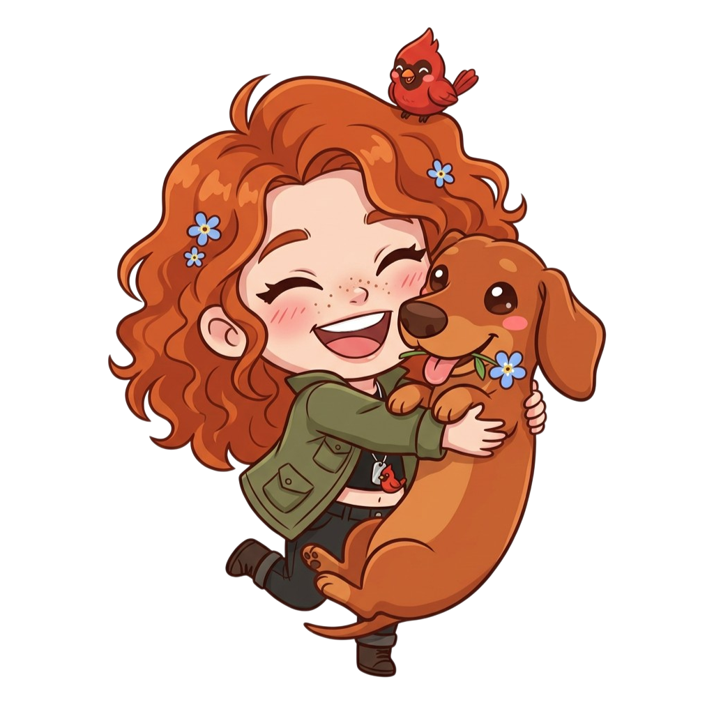

Соавторы персонажейCharacter co-creators
KanonMama
wvenusss
aceenvw
Rakshakti
Mairon
Изамбард «Иззи» Разумовский
KamiyaK
HoneydEw
Heatri
KanonMama
wvenusss
aceenvw
Rakshakti
Mairon
Izambard «Izzy» Razumovsky
Изамбард «Иззи» Разумовский
Izambard «Izzy» Razumovsky

Я всегда буду тебя любитьI will always love you